Create an account and log in
Use your phone number to register, complete verification where shown, then log in with your PIN.
- Open AgroMath and choose the account path that matches what you want to do.
- Enter your phone number and complete OTP or account verification if AgroMath asks for it.
- Set or enter your PIN to access your account.
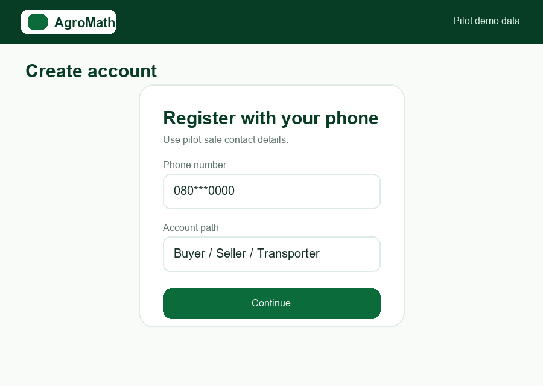
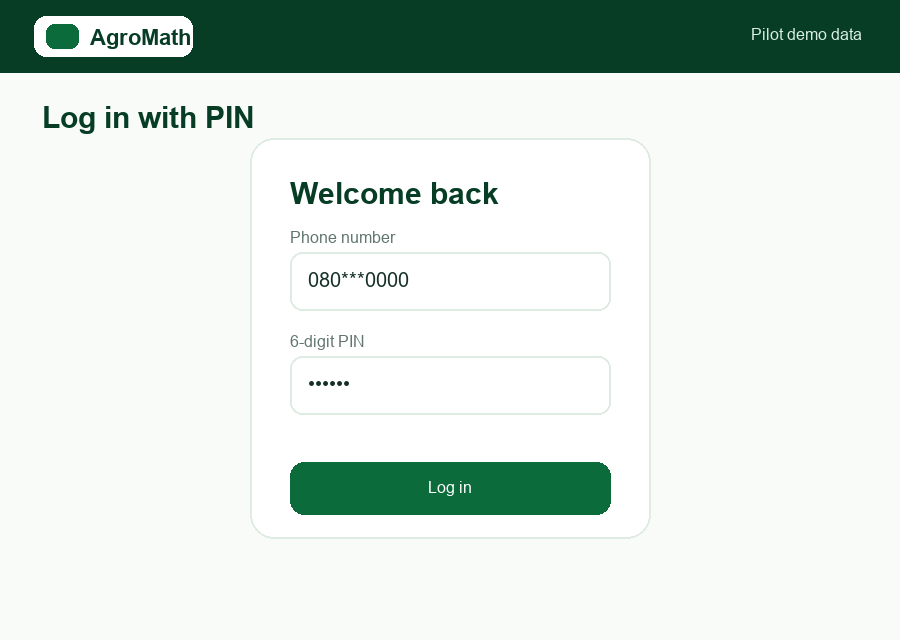
First setup steps by account type
After registration, complete the setup steps that match your role. Some accounts may remain under review while you prepare locations, payout details or draft records.
Browse products
Open the marketplace, select a product and check the information before adding anything to cart.
- Open the marketplace from the AgroMath app.
- Choose a product card to view more details.
- Check price, unit, seller, available quantity and pickup or delivery information before continuing.
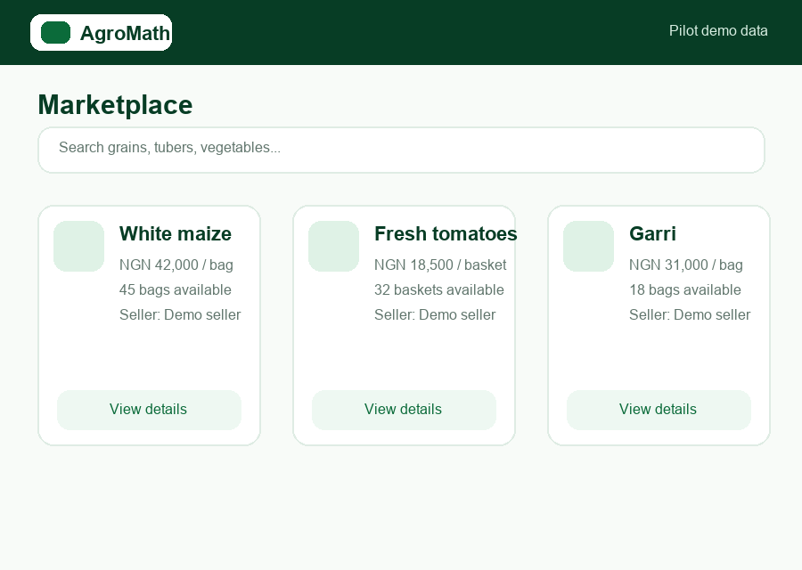
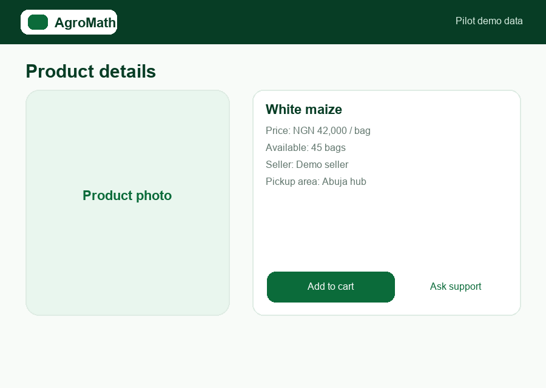
Add a product to cart and checkout
Choose the quantity you need, add the product to cart, then review the cart before checkout.
- Select the quantity using the controls shown on the product screen.
- Add the product to cart.
- Open the cart, review product, quantity, unit price and total, then continue to checkout.
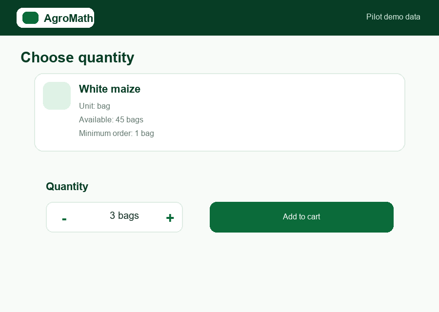
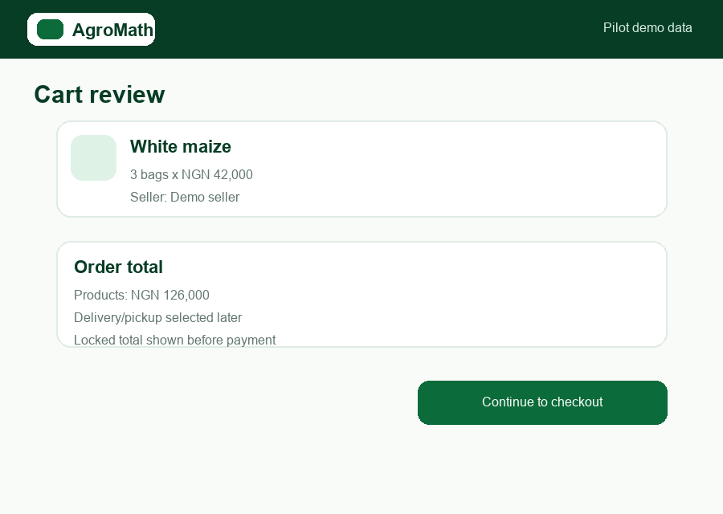
Choose delivery or pickup
The person placing the order chooses a saved delivery location, buyer pickup, or a transporter quote option where available.
- Select a saved delivery location if the order should be delivered.
- Choose buyer pickup if you will collect the goods yourself.
- Use transporter quotes where the order requires delivery support from a transporter.
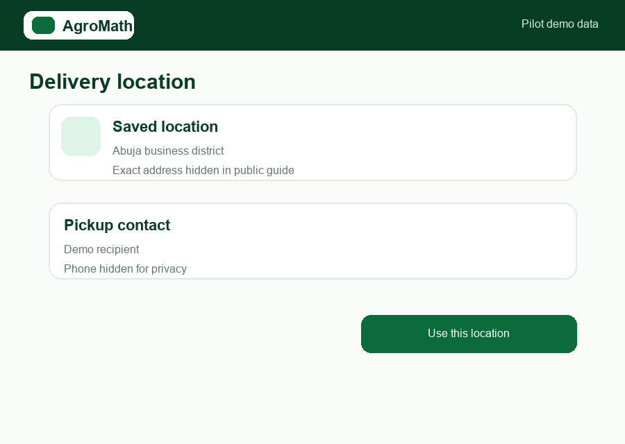
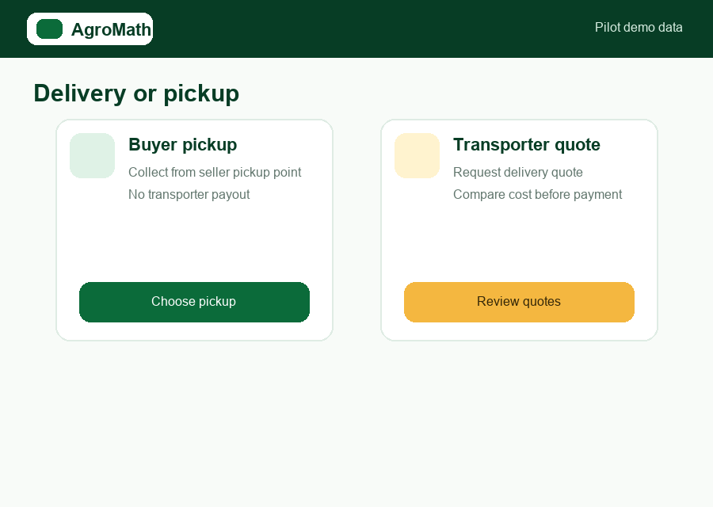
Make payment
The buyer pays the locked total using the supported AgroMath payment flow shown in the pilot app.
- Review the locked order total before payment.
- Use the payment flow currently enabled in the pilot app.
- Follow the payment status shown in AgroMath before fulfilment moves ahead.
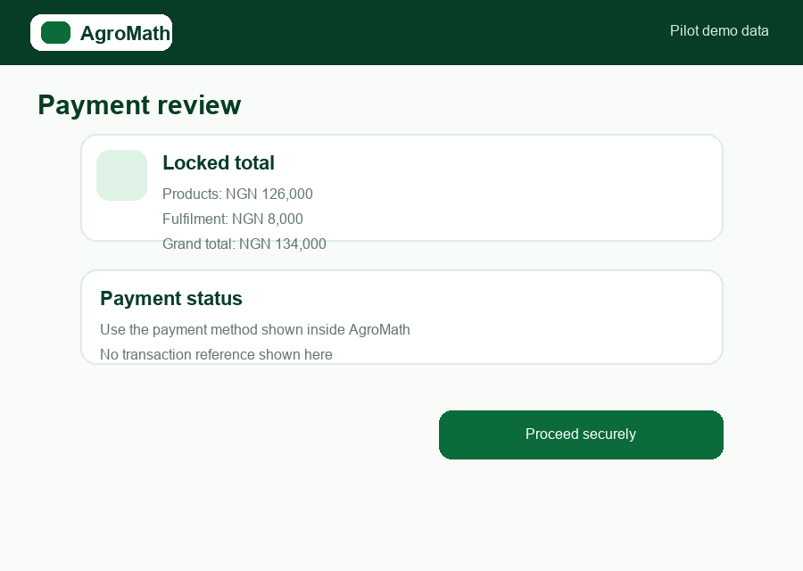
Sell on AgroMath
The current Farmer account is the selling account for approved farmers and other permitted sellers. Start by saving a pickup location, then set payout details and draft products.
- Use the Farmer account if you are an approved seller or seller applying for review.
- Save at least one pickup location before adding products. You may save more than one pickup location and choose the right one later.
- Set up payout details so settlement can be reviewed and prepared.
- Add product name, category, unit, price, quantity and pickup information. Use digits for numbers, such as 20 instead of twenty.
- Submit listings through the approval flow shown in AgroMath before buyers can order where approval is required.
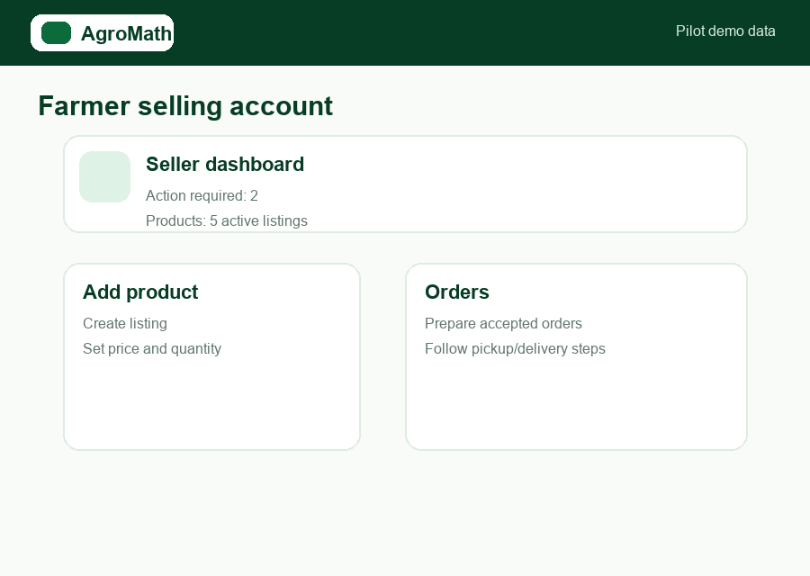
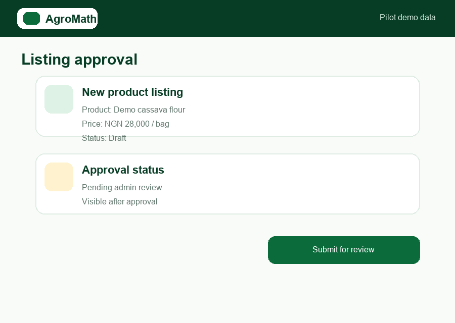
Transport with AgroMath
Transporters register first, wait for marketplace approval where required, then find delivery jobs, quote, receive assignments and update delivery progress.
- Create a Transporter account with your phone number and PIN.
- Complete the transporter setup details requested in AgroMath.
- After approval, open available delivery jobs that match your route and capacity.
- Submit a transport quote where quoting is available.
- When assigned, start delivery and mark the order delivered after fulfilment.
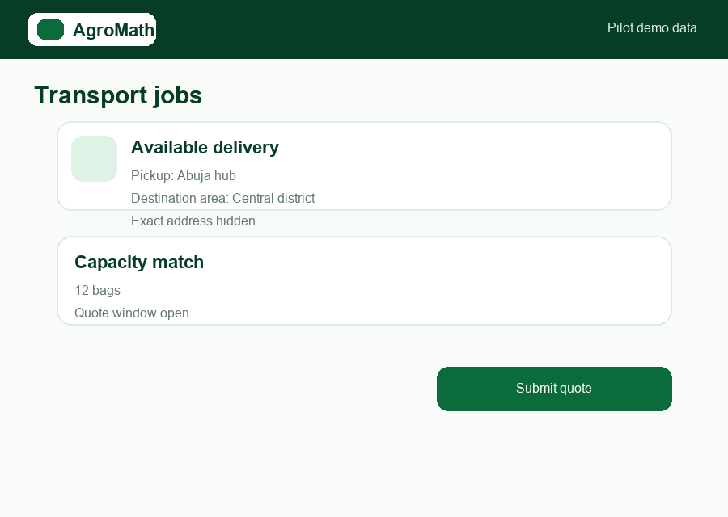
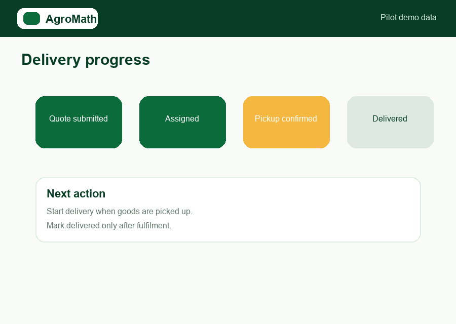
Accept delivery or report an issue
After delivery or pickup, the buyer accepts the goods or reports a problem so the order can move to the correct next step.
- Check the delivered or collected goods against the order.
- Accept fulfilment if everything is correct.
- Report an issue quickly if the order is wrong, incomplete or damaged.
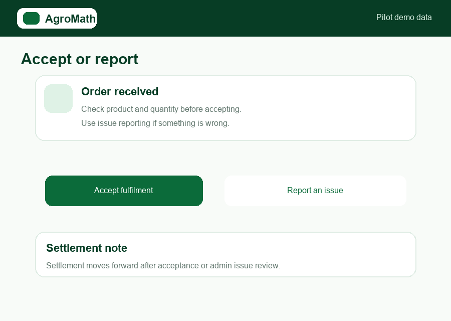
Get help
Contact AgroMath support if you are unsure which step to take next.
Need guided support?
Send us a WhatsApp message and we will help you find the right next step.
WhatsApp UsOpen AgroMath